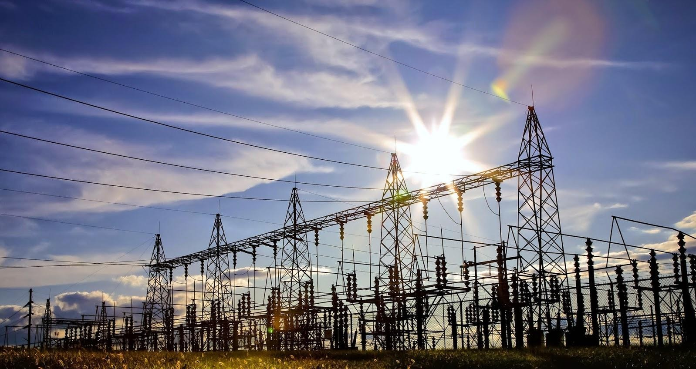

Professional maintenance and repair services for electrical systems and equipment across Malaysia
| No. | Maintenance Project | Completion Date |
|---|---|---|
| 1 | Manuply Wood Sdn Bhd - 11KV Main Intake, 415V Switchboard | June 2001, June 2004 |
| 2 | UPM, Bintulu - 11KV Main Intake, 11KV Sub-Main | August 2001 |
| 3 | Bright Wood Sdn Bhd - 11KV Main Intake | September 2001, December 2002, November 2003 |
| 4 | Kinjun 33/11KV S/S, Bintulu | September 2001 |
| 5 | Saratok 33/11KV S/S | September 2001 |
| 6 | Kindurong 33/11KV S/S, Bintulu | September 2001 |
| 7 | Medan 33/11KV S/S, Bintulu | September 2001 |
| 8 | Alan Road 33/11KV S/S, Sibu | September 2001 |
| 9 | Town 33/11 KV S/S, Bintulu | September 2001 |
| 10 | SESCO Western Region 33/11Kv S/S - Battery Capacity Test, DC Charger Commissioning | September 2002 |
| 11 | TEMBUNGO "A" Offshore Platform, KK - Relay Calibration Test | October 2002 |
| 12 | 1st Silicon (M) Sdn Bhd - 33KV Switchgear – Relay Maintenance works | November 2002 |
| 13 | Bypass 33/11Kv S/S, Kuching | December 2002 |
| 14 | CHOICE Super Mall, LV MSB | January 2003 |
| 15 | 132Kv Power Cable, Kidurong Bintulu - Sheath Test | February 2003 |
| 16 | Tukau Quarters "A" Offshore Platform - CT and VT Primary Injection Test, LV Busbar Conductivity Test, Neutral Earthing Test | February 2003 |
| 17 | ERB WEST Offshore Platform, KK - Protective Relay Calibration Test At EWG-A, EWQ-A & EWP-A. | April 2003 |
| 18 | SESCO SARAWAK REGIONS - 33Kv Substations Directional O/C and E/F Relay Secondary Injection Test | June 2003 |
| 19 | FURNAMA HOTEL, LIMBANG - MSB & AMF relay testing and switchboard servicing. | July 2003 |
| 20 | 1st SILICON (M) SDN BHD - MV/LV Protective Relay Calibration Test. | April 2004 |
| 21 | ERB WEST Offshore Platform, KK - Lightning & earthing systems test | May 2004 |
| 22 | Nestle Noodle Plant Kuching - MSB & AMF Board Servicing | June 2004 |
| 23 | Baronia Offshore Platform - HV & LV Protective Relay Calibration Test | August 2004 |
| 24 | RIHGA Hotel, Miri - MSB primary injection test | October 2004 |
| 25 | Purnama Hotel, Limbang - MSB, SSB & AMF Board general servicing and calibration | November 2004 |
| 26 | Balai Polis & Perumahan, Tebedu - Relay calibration | December 2004 |
| 27 | FFM Flour Mill, Kuching - Relay Calibration | February 2005 |
| 28 | Samling Plywood (Baramas) Miri - HV & LV relay calibration | May 2005 |
| 29 | Sibu Hospital - UPS System Battery Discharge Test | June 2005 |
| 30 | CMS Cement Bintulu - Relay calibration | July 2005 |
| 31 | MLNG Bintulu - LPG / Module 4 – HV & LV protective relay calibration | August 2005 |
| 32 | New Court Kuching - LV protective relay calibration | August 2005 |
| 33 | Samling Plywood, Miri - HV & LV relay calibration | September 2005 |
| 34 | Hwang-DBS Securities, Kuching - LV protective relay calibration | November 2005 |
| 35 | Komag USA, Kuching - LV ACB maintenance | January 2006 |
| 36 | LPG Bottling Plant, Bintulu - LV protective relay calibration | January 2006 |
| 37 | FFM Flour Mill, Kuching - Relay Calibration | February 2006 |
| 38 | GT plywood Bintulu - HV & LV relay calibration | March 2006 |
| 39 | MLNG Bintulu - Module 8 Turnaround Shutdown (HV & LV protective relay calibration | March 2006 |
| 40 | GT Plywood Bintulu - Protective relay calibration, VCB hipot test, CT test | April 2006 |
| 41 | GT Plywood & Brightwood - HV & LV Protective relay calibration | June 2006 |
| 42 | CMS Cement Bintulu - HV & LV Relay calibration | July 2006 |
| 43 | MLNG Bintulu - Module 1 Turnaround Shutdown (HV & LV protective relay calibration | July 2006 |
| 44 | Magna Foremost Bintulu - LV protective relay calibration | July 2006 |
| 45 | 1st Silicon Kuching - HV Protective relay calibration | August 2006 |
| 46 | MLNG Bintulu - Module 5 Turnaround Shutdown (HV & LV protective relay calibration | August 2006 |
| 47 | Daiken Miri - HV & LV protective relay calibration, 33/6.6kV power transformer testing, 6.6/0.433kV power transformer testing, 33kV & 6.6kV VCB hipot & ductor test | September 2006 |
| 48 | General Hospital, Sarawak - LV protective relay calibration - SGH, Serian, Sentosa, Betong, Sri Aman, Lundu, Bau, Mukah, Daro, Limbang, Saratok, Dalat, Kanowit, Miri, Sarikei | October 2006 – November 2006 |
| 49 | Regency Hotel, Bintulu - LV protective relay calibration | December 2006 |
| 50 | Purnama Hotel, Limbang - MSB, SSB & AMF Board general servicing and calibration | January 2007 |
| 51 | Bintulu Port (Admin Building) - ACB test | January 2007 |
| 52 | FFM Flour Mill, Kuching - Relay Calibration | January 2007 |
| 53 | Sarawak Clinker - 33/6kV power transformer test | February 2007 |
| 54 | Pangkalan TUDM, Kuching - LV protective relay calibration | February 2007 |
| 55 | IKM, Kuching - LV protective relay calibration | March 2007 |
| 56 | Sarawak Clinker - Transformer Oil Dielectric test, 6/0.433kV transformer bushing gasket replacements | March 2007 |
| 57 | CMS Cement Bintulu - HV & LV Relay calibration | March 2007 |
| 58 | UPM Bintulu - VCB ductor test | March 2007 |
| 59 | Shell Lutong - HV & LV Protective Relay calibration | April 2007 |
| 60 | Daiken Miri - 33/6.6kV power transformer testing | April 2007 |
| 61 | Pangkalan TUDM, Kuching - MSB & AMF Board general servicing | May 2007 |
| 62 | PS Terminal Bintulu - LV Protective Relay calibration | April 2007 |
| 63 | Jabatan Kimia Malaysia, Bintulu - LV Protective Relay calibration | May 2007 |
| 64 | Samling Plywood Bintulu - LV Protective Relay calibration | May 2007 |
| 65 | UNIMAS - 11kV switchgear general servicing | May 2007 |
| 66 | GT Plywood Bintulu - Protective relay calibration | June 2007 |
| 67 | Centre Point Shopping Complex, Kuching - MSB general servicing | July 2007 |
| 68 | Manuply Wood Bintulu - HV & LV protective relay calibration, 11kV VCB hipot & ductor test | August 2007 |
| 69 | CAIRNFIELD Factory - HV & LV protective relay calibration, 11kV VCB hipot & ductor test | August 2007 |
| 70 | Purnama Hotel Limbang - LV System Power Quality Analysis | September 2007 |
| 71 | UPM Campus, Bintulu - HV & LV protective relay calibration | September 2007 |
| 72 | Daiken Miri - HV & LV protective relay calibration, 6.6/0.433kV power transformer testing, 33kV & 6.6kV VCB hipot & ductor test | September 2007 |
| 73 | Shih Yang Plywood Miri - HV & LV protective relay calibration | October 2007 |
| 74 | Daiken Sarawak, Bintulu - HV & LV protective relay calibration, 33/6.6kV power transformer testing, 6.6/0.433kV power transformer testing, 33kV & 6.6kV VCB hipot & ductor test | November 2007 |
| 75 | Hwang-DBS Securities, Kuching - LV protective relay calibration | December 2007 |
| 76 | UPM Campus, Bintulu (MIS) - HV & LV protective relay calibration, 11/0.433kV power transformer test | November 2007 |
| 77 | Limbang Airport - LV protective relay calibration, Switchboard general servicing, Thermal Imaging | December 2007 |
| 78 | New Court Kuching - LV protective relay calibration | January 2008 |
| 79 | UNIMAS - MIS 11kV switchgear general servicing | February 2008 |
| 80 | Everrise BDC - LV protective relay calibration, Switchboard general servicing, Power quality analysis | March 2008 |
| 81 | Pangkalan TUDM, Kuching - MSB & AMF Board general servicing | May 2008 |
| 82 | Kolej Komunity Kuching - LV protective relay calibration | July 2008 |
| 83 | Menara MAA, Kuching - LV protective relay calibration | July 2008 |
| 84 | Daiken Miri - HV & LV protective relay calibration, 33/6.6kV power transformer testing, 6.6/0.433kV power transformer testing, 33kV & 6.6kV VCB hipot & ductor test | September 2008 |
| 85 | Limbang Airport - LV protective relay calibration, Switchboard general servicing, Thermal Imaging | November 2008 |
| 86 | Masjid Jamek Kuching - LV protective relay calibration | December 2008 |
| 87 | FFM Flour Mill, Kuching - Relay Calibration | December 2008 |
| 88 | IKBN, Miri - LV protective relay calibration, Switchboard general servicing | December 2008 |
| 89 | Satria Court, Kuching - LV protective relay calibration | January 2009 |